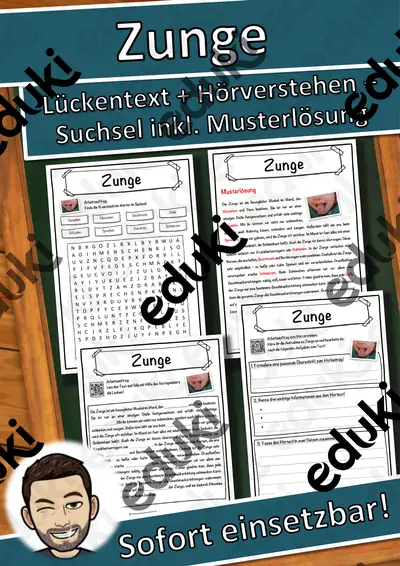

Sinnesorgane: Arbeitsblätter für Klasse 2–8 (Biologie)
Sehen, Hören, Riechen, Schmecken, Tasten: Die Sinne sind ein Einstieg in die Körperkunde und gleichzeitig Anlass für viele Experimente. Ab Klasse 5 geht es um den Aufbau von Auge und Ohr.
Im Unterricht begegnen den Lernenden zuerst Auge und Ohr. Wer weitergeht, behandelt Nase, Zunge, Haut sowie Sinneszellen.
Die Lehrpläne der Länder sehen das Thema im Fach Biologie vor, in der Regel in den Klassen 2 bis 8. Als Ziel gilt: die Kinder ordnen Sinnesorgane Wahrnehmungen zu und beschreiben den Weg eines Reizes.
Für den Einstieg in Sinnesorgane bieten sich Aufgaben zu Auge an, zum Üben solche zu Ohr und Nase, zur Wiederholung vor einer Lernkontrolle ein Blick auf Sinneszellen. Die Lösungen liegen bei, sodass im Unterricht niemand nachschlagen muss. Leistungsstarke und schwächere Lesende erhalten über die Lesespurgeschichten Texte in drei Stufen.
15 passende Materialien stehen bereit, etwa Himmel und Hölle: Körper und Sinne, Klammerkarten: Körper und Sinne und Wortgitter-Suchsel: Körper und Sinne. Vertreten sind 2 Lesespurgeschichten und 5 Lückentexte mit Hörverstehen; die Stufen reichen über Klasse 1–8. Ein Fühlkasten oder eine Riechprobe mit verbundenen Augen macht den Sinn erlebbar, bevor er benannt wird.
Das gehört zum Thema
Passende Arbeitsblätter und Materialpakete

Lärm, Musik und Gehör – so schützt du deine Ohren – Lesespurgeschichte mit Rätselaufgaben (Klasse 6)

Die Zunge – Lesespurgeschichte mit Rätselaufgaben (Klasse 8)

Zunge Lückentext mit Wortspeicher Hörverstehen und Suchsel

Ohr Lückentext mit Wortspeicher Hörverstehen und Suchsel

Nase Lückentext mit Wortspeicher Hörverstehen und Suchsel

Haut Lückentext mit Wortspeicher Hörverstehen und Suchsel

Auge Lückentext mit Wortspeicher Hörverstehen und Suchsel

Himmel und Hölle: Körper und Sinne – Himmel und Hölle – Klasse 1–4

Klammerkarten: Körper und Sinne – Klammerkarten – Klasse 1–4

Wortgitter-Suchsel: Körper und Sinne – Wortgitter – Klasse 1–4

Wortspiele: Sag es nicht! Körper und Sinne – Klasse 2–4

Wort-Bild-Karten: Körper und Sinne – Wort-Bild-Karten – Klasse 1–4

Ich habe, wer hat? Körper und Sinne – Lese-Schleifen – Klasse 1–4

Lesen, Malen und Kleben: Körper und Sinne – Lesen und Malen – Klasse 1–4

Sprechanlässe: Körper und Sinne – Sprechanlässe – Klasse 1–4
Häufige Fragen
Für welche Klassenstufe passen die Arbeitsblätter zu Sinnesorgane?
Der Schwerpunkt liegt auf Klasse 2; insgesamt deckt die Auswahl (15 Titel) Klasse 1–8 ab. In der Beschreibung jedes Materials steht die empfohlene Stufe.
Welche Inhalte decken die Materialien zu Sinnesorgane ab?
Inhaltlich reicht die Auswahl von Auge über Ohr und Nase bis zu Haut; Details stehen bei den einzelnen Materialien.
Wie setze ich Sinnesorgane im Unterricht ein?
Ein Fühlkasten oder eine Riechprobe mit verbundenen Augen macht den Sinn erlebbar, bevor er benannt wird. So entsteht aus den Blättern eine kleine Einheit, die sich auf zwei bis drei Stunden verteilen lässt.
Mehr Material nach Fach und Klasse
- Alle Materialien Deutsch
- Arbeitsblätter Deutsch Klasse 2
- Arbeitsblätter Deutsch Klasse 3
- Arbeitsblätter Deutsch Klasse 4
- Arbeitsblätter Deutsch Klasse 5
- Arbeitsblätter Deutsch Klasse 6
- Arbeitsblätter Deutsch Klasse 7
- Arbeitsblätter Deutsch Klasse 8
- Unterrichtsmaterial Klasse 2
- Unterrichtsmaterial Klasse 3
- Unterrichtsmaterial Klasse 4
- Unterrichtsmaterial Klasse 5
- Unterrichtsmaterial Klasse 6
- Unterrichtsmaterial Klasse 7
- Unterrichtsmaterial Klasse 8
Verwandte Lehrplanthemen
- Körper, Skelett und Muskeln (Biologie, Klasse 2–7)
- Säugetiere (Biologie, Klasse 3–8)
- Atmung, Verdauung und Organe (Biologie, Klasse 5–9)
- Fische und Meerestiere (Biologie, Klasse 4–8)
- Fotosynthese (Biologie, Klasse 5–9)